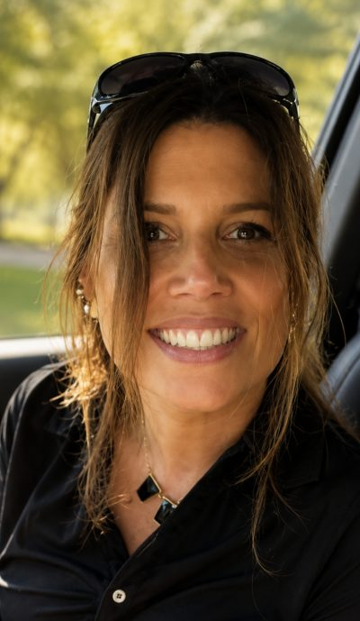
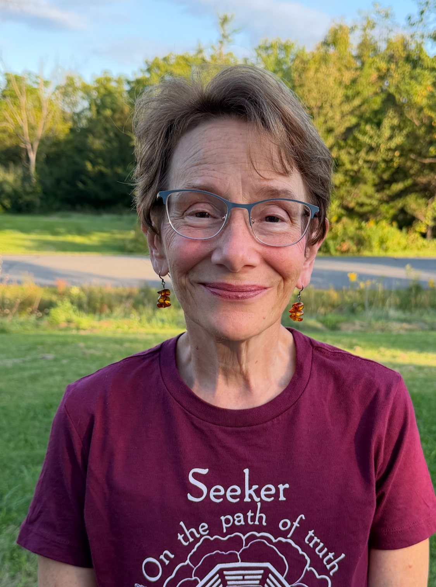
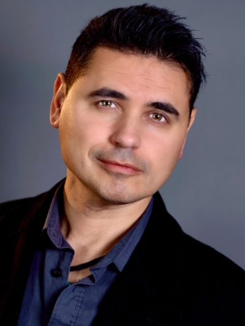
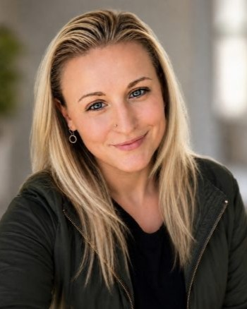
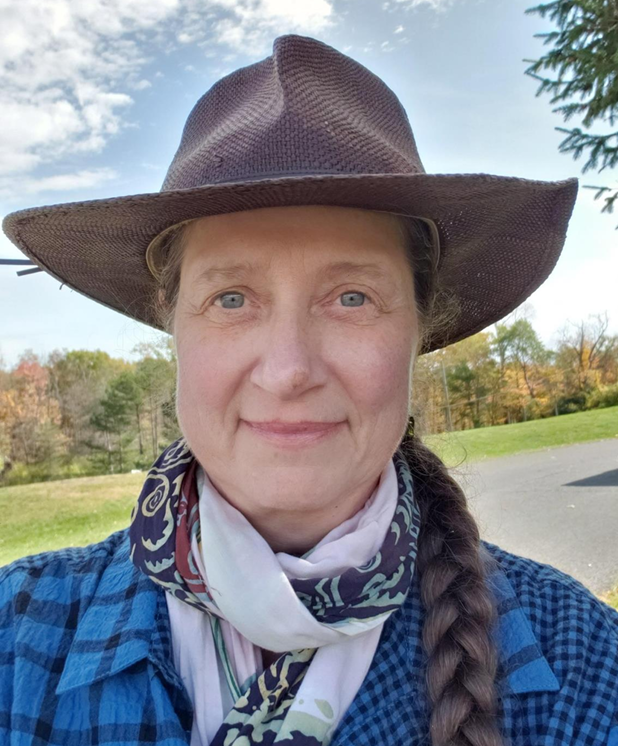
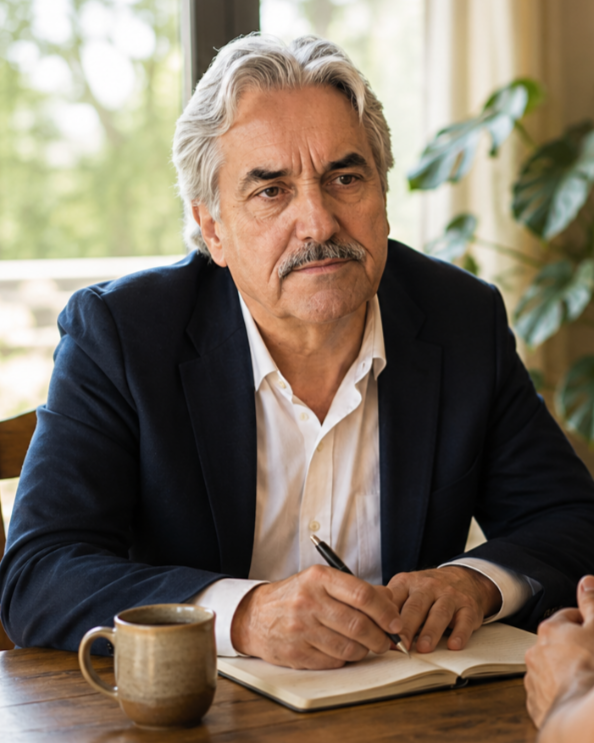
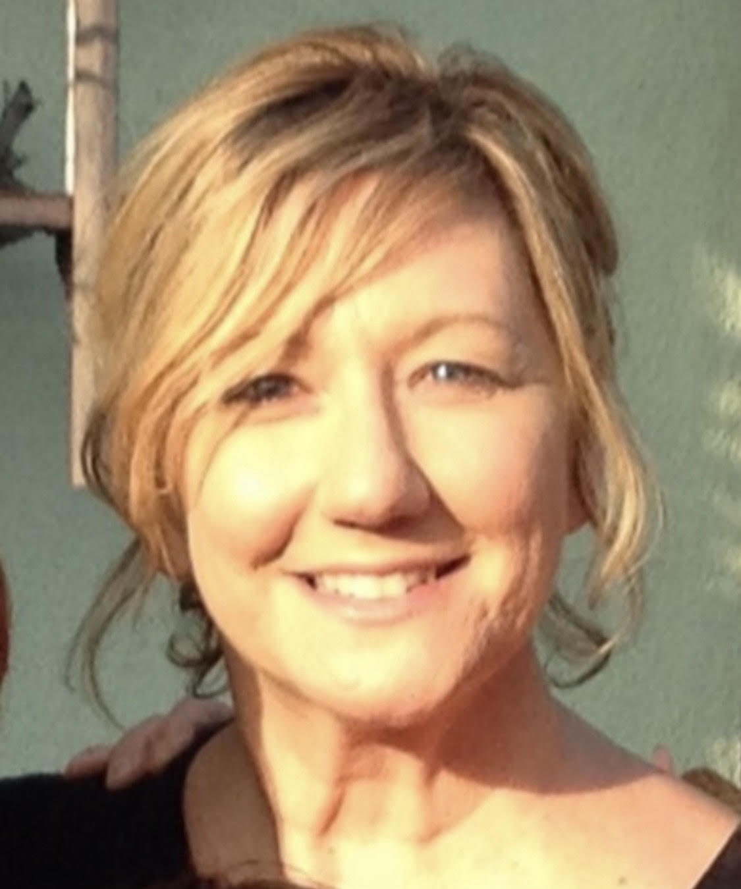

Our Team

Michelle Walker
Founder, Clinical Operations Director, & Integrative Somatic Practitioner
Welcome to Sol Intentions, a sanctuary where conventional clinical expertise meets deep, root-cause holistic healing. My name is Michelle Walker, and as a Licensed Practical Nurse and site manager of direct-pay primary care wellness practices, I have had the privilege of experiencing healthcare from both a clinical and a personal perspective. Through my experiences and continued learning, I have come to appreciate that these two perspectives do not have to exist independently of one another. My philosophy is rooted in the belief that true wellness means looking beyond symptoms and recognizing the whole person.
My vision was to create an elevated, collaborative wellness ecosystem where clients don't just manage symptoms, but truly thrive. To bring this to life, Sol Intentions houses an incredible team of diverse leaders, including a DO medicine woman, expert massage therapist, nutritional therapist, licensed acupuncturist, recovery coach, IV therapist, and yoga teacher to ensure that every individual who walks through our doors receives a truly comprehensive, multi-dimensional path to wellness.
As a practitioner, my personal approach bridges medical oversight with sophisticated somatic and vibrational healing. My extensive training includes certifications as a Polyvagal Practitioner, Natural Health Consultant, Aromatherapist, and Reiki/Crystal Reiki Master, trained in advanced chakra balancing alongside the therapeutic resonance of vibroacoustic sound healing with tuning forks to gently guide the nervous system out of chronic stress and into a state of deep restorative repair.
To complement our practitioner-led therapies, I have curated an additional suite of cutting-edge, medical-grade wellness technologies designed to optimize cellular vitality. At Sol Intentions, clients have access to our custom infrared sauna lined with salt bricks for respiratory detoxification and deep thermal healing, high-density red light therapy panels and mats to stimulate cellular energy and skin rejuvenation, and advanced PEMF (Pulsed Electromagnetic Field) mats to accelerate physical recovery and reduce systemic inflammation.
Sol Intentions is more than a wellness center; it is the culmination of my life's work. Whether you are seeking clinical-grade somatic therapy, ancient medicine, or modern longevity tech, my team and I are here to hold space for your healing journey with the highest standards of safety, luxury, and intent.

Dr. Theresa Sirico
Holistic Medicine Practitioner
As an Integrative Doctor, Medicine Woman, and Energy Worker, my mission is to restore health, inspire vitality, and improve the lives of my patients through a harmonious blend of alternative therapies and modern wellness principles. For over 30 years as a General Practitioner, I have been dedicated to treating the whole person—Body, Mind, and Spirit. By combining tailored personalized supplement regimens and stress-reduction techniques via breathwork and Reiki with natural remedies like flower essences and essential oils, I create customized pathways to healing. My ultimate goal is not just to heal, but to guide and educate my patients to become active stewards of their own long-term health.
Patient Testimony:
"Relocating to upstate NY from Northern California, where alternative and complementary medicines are easily accessible and generally integrated into many health practitioners’ offices, I found it an absolute joy and surprise to discover the gifted Dr. Theresa Sirico. I recently experienced Dr. Sirico’s expertise and knowledge when allopathic medical advice left me hopeless. Her genuine care and thorough demeanor are encouraging; her understanding is unparalleled. She is much more than a doctor of osteopathy. She is a skilled medicine woman, medical intuitive, who is also trained in Reiki and homeopathy who offers a fresh, organic perspective to many common medical issues that she incorporates into existing medical protocols. If you are seeking true healing, not simply a fleeting solution that only attends to symptoms, I would highly suggest Dr. Sirico, she is committed to helping her patients restore and revitalize their lives."
Available Services Include:
- Reiki & Aura Cleansing
- Advanced Flower Essence Therapy Featuring Bach Flower Remedies & Desert Alchemy
- Holistic Herbal Medicine Consults
- Compassionate Listening Therapy for Mental Health Support
Contact:

Vinnie Velez
Massage Therapist
My name is Vinnie Velez, and I am a Licensed Massage Therapist, actor, writer and filmmaker. I studied at a satellite school of the Swedish Institute of Massage. Then, I went on to train with various specialists in energy work, spiritual healing, Myofascial Release, Deep Tissue Massage, Sports Massage, Hot Stone Massage, Reflexology, and much more. Over the 15 years that I’ve been practicing, my work has morphed into the “best of” all the modalities I have been trained in. I customize each session to my client’s needs and specific requests on the day of their service.
My work is slow, methodical and intuitive. Whether lighter or very deep, I always aim for my work to feel as amazing as possible. That means applying the most effective techniques to your trouble areas at just the right depth. I want your healing journey to feel amazing every step of the way, even if we have plenty of roadblocks to clear. I look forward to seeing you in the Germantown office and helping you feel the best you’ve felt in years!
Contact:

Amy Salvatore
Nutritional Therapy Practitioner
Amy is the founder of Naturally Rooted Nutrition & Wellness and is honored to be a part of the Sol Intentions team, where she collaborates with a group of compassionate professionals who share a passion for empowering others to take charge of their health.
With over 15 years of experience in the healthcare field, Amy has dedicated her career to helping individuals navigate their health journeys. She became a Nutritional Therapy Practitioner to deepen her knowledge and find answers to her own health challenges, to support others in a more personalized and holistic way. She understands firsthand how frustrating it can be to search for answers and feel unheard. She believes that every person deserves to have a trusted partner in their wellness journey – someone who listens, helps connect the dots, and provides guidance every step of the way.
Amy’s approach focuses on creating professional wellness plans tailored to everyone’s unique needs, goals, lifestyles and health history. Rather than relying on a one-sized-fits-all approach, she works collaboratively with clients to identify practical, sustainable strategies that support long-term health and help them feel their best.
As a mom, she understands the importance of creating a healthy, balanced life for both you and your family. She is passionate about helping busy individuals and families feel their best, have more energy and thrive in their everyday lives.
Drawing from her extensive healthcare background, and passion for holistic wellness, Amy takes a whole person’s approach to health, recognizing that factors such as digestion, sleep, stress, movement, nutrition and daily habits all play a vital role in overall well-being.
In her spare time, Amy enjoys caring for her small farm, where she raises goats, chickens, pigs, and sheep. Her love of natural living inspired her to create a line of handcrafted goat milk soaps and other natural products, reflecting her belief that wellness extends beyond nutrition and into the choices we make every day.
Amy’s mission is simple: to help clients feel empowered, supported, and confident in their ability to make meaningful changes that lead to lasting wellness.
Contact:

Alison Murphy
Constitutional Acupuncturist, 8 Extraordinary Vessel Therapist
Health Intuitive, Medium, Energy Clearing, Tarot
True, lasting healing comes through communication with One’s Soul and receiving guidance directly from One’s Own connection with Source. It is my purpose to facilitate that conversation and assist clients with navigating their Soul Journey. This includes the practice of Wu Wei - the Daoist perspective of non-interference with another’s Will.
It is my purpose to facilitate that conversation and assist clients with navigating their Personal Soul Journey. This includes the practice of Wu Wui - the Daoist principle of non-interference with another Living Soul's Will.
Clients lead the way - together we uncover their path to healing. 8 Extraordinary Vessel Therapy, Constitutional Acupuncture is deep and deeply transformational on all levels Pre-Natal to Post-Natal. The opportunity for current- and past-life challenges to rise, release and fully resolve is possible.
Credentials & Training:
- Master of Science, 2008 Graduate of Jeffrey C. Yuen’s Classical Acupuncture Program at the Swedish Institute
- NCBAHM Certified, NYS Licensed
- Graduate of Tina Zion’s Medical Intuition and Mediumship Trainings and continued studies with Maryann Kelly
- Graduate of Ellen Goldberg’s School of Oracles: Tarot Interpretation & Palm Analysis
Contact:

Frank Marquit
Certified Recovery Coach with Lived Experience
M.Ed, M.A., C.A.G.S.
I focus on men who have alcohol dependency concerns. I work with you to explore a whole range of options and strategies to live without dependency on Alcohol.
Together we will build practical tools to reduce cravings and navigate triggers, explore effective strategies to calm anxiety and manage stress, and reconnect with your values, strength, and sense of purpose.
My approach is to help you rediscover how to become your true self and rebuild your life without relying on alcohol.
Contact:
Call, Text, or Facetime: (518) 303-2578

Wendy Van Lare
RN, IV Infusion Therapist
With 46 years of nursing experience, I have dedicated my career to exploring diverse paths to holistic body healing, with a strong emphasis on the vital role of optimal nutrition.
Our access to nutrient-dense foods can be limited. By delivering essential nutrients directly into the bloodstream, they bypass the digestive tract and replenish the body. This works to support each clients functional health & wellness goals.
I partner with Dr. Benincasa-Feingold to provide high quality IV Vitamin & Mineral Blends that work to meet your specific needs.
To schedule a complimentary call, check with Michelle. We will be in touch & determine the best plan for you.